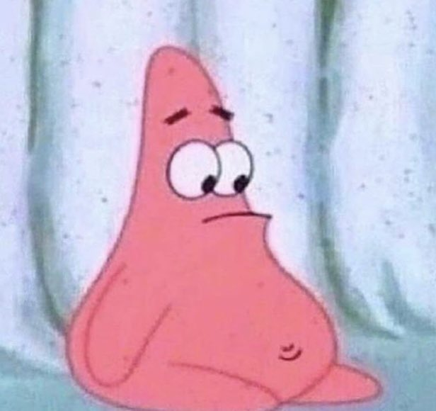

Hello, there!
foods i eat:
how i eat:
me after eating fr:
my room is beautiful and BIG.
Control is something we also expect from our digital objects and environments. Control, here, generally comes in the form of buttons, sliders, forms, and toggles. Similar to the moveable chair, the scope of this control is limited and pre-defined by whoever is building the thing (urban or digital space).
Make a website that reflects on agency, control, and change within digital space. Consider how elements of control alter the experience of a space. Where is the threshold between document and tool?